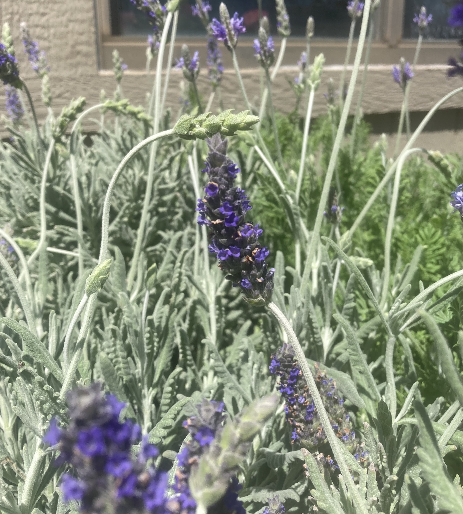
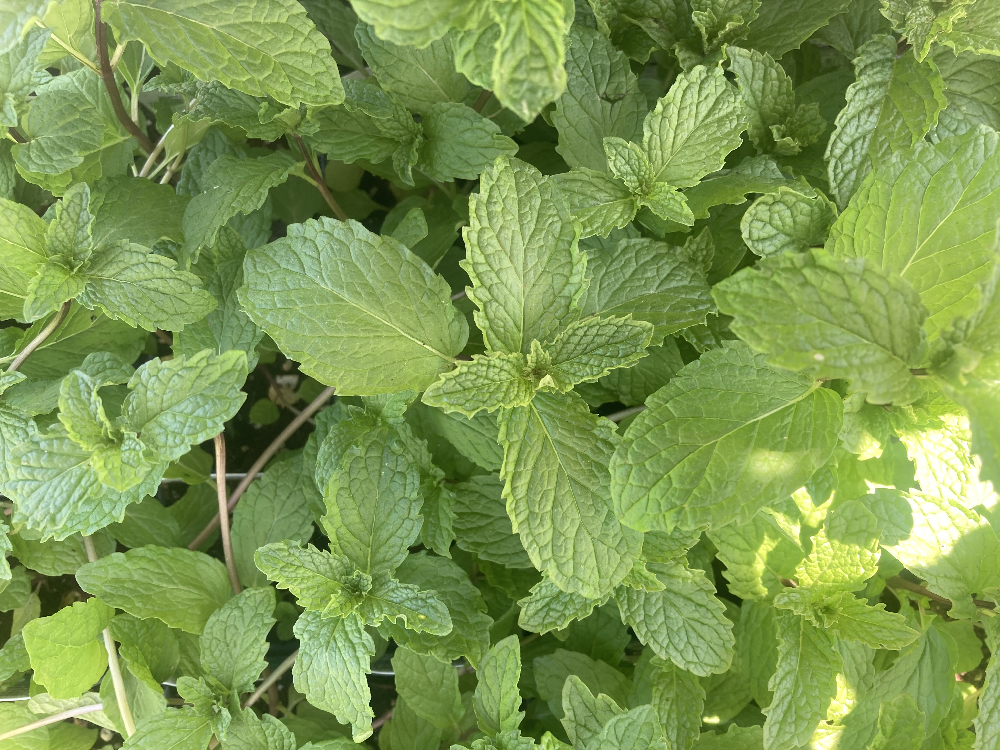
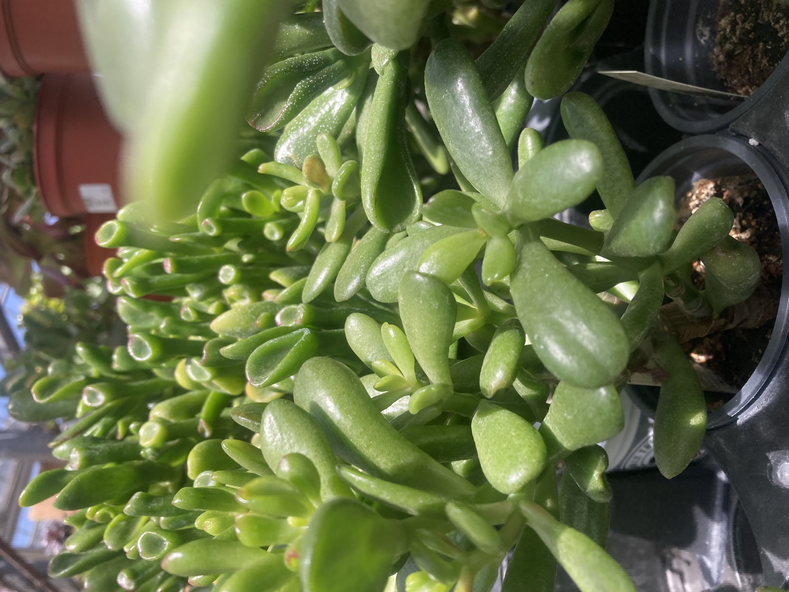

Herbs and succulents are rewarding, low-maintenance choices that thrive in containers and sunny windows. Whether fragrant or sculptural, these plants bring beauty and practicality to small spaces.
French Lavender
- Full sun (6-8 hours)
- Well-draining, sandy soil
- Low water; let dry between waterings
- Rarely needs fertilizer
- Trim lightly after blooming
- Overwinters in Zone 6a with protection
- Fragrant and drought-tolerant
Mojito Mint
- Full to part sun
- Moist, rich soil
- High water needs, especially in heat
- Fertilize occasionally
- Trim often to prevent flowering
- Spreads rapidly; great in containers. Even better in a Mojito.
- Perennial in Zone 6a
String of Pearls

- Bright, indirect light
- Succulent/cactus mix soil
- Low water; let soil dry completely
- No fertilizer needed unless leggy
- Trim stems to encourage fullness
- Bring indoors before temps drop below 50°F
- Beautiful in hanging containers
Gollum Jade
- Full sun to part shade
- Cactus or succulent soil
- Low water; drought-tolerant
- Fertilize sparingly
- Pinch to keep shape
- Bring inside before 40°F
- Unusual, sculptural foliage
Fairy Castle Cactus

- Full sun
- Dry, sandy soil
- Very low water; water sparingly
- Fertilize in spring/summer
- Keep in bright, warm spot indoors